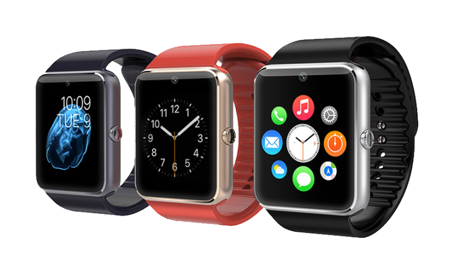

Un Smartwatch hace mucho mas a lo que nos tenian acostumbrados los relojes digitales tradicionales; dar la hora, cronometro, calendario y alarma son funciones tan basicas, que mencionarlas en las prestaciones que ofrece un Smartwatch esta de mas, pues estan presentes en cualquier reloj de este tipo. La tecnologia de estos relojes tiene el suficiente tiempo para ya ser generica y poder ser replicada, con un buen estandar de calidad por los fabricantes, esto ademas los vueleve accesibles a cualquer bolsillo.
Por lo debe vincularse a un Smartphone o Tablet (por medio de una aplicacion) para ofrecer una experiencia completa de sus capacidades. Tambien hay modelos que funcionan como un celular, sencillo comparado con los Smartphones, pues son compatibles para targeta SIM de algunas compañias telefonicas; se les puede hcer regargas telefonicas, pueden recibir SMS, llamadas y algunos hasta navegador, ademas de la posibilidad de conexion Bluetooth.
Cada fabricante ofrece variantes en las funciones de cada uno de sus modelos. Pero existen algunas básicas, comunes en la mayoría de relojes, sin importar marca ni rango de precios(funciones de cuidado de la salud, vinculacion bluetooth con celulares para gestion de playlist, llamadas y notificaciones de redes sociales), ademas por supuesto de las funcionalidades básicas de un relog digital; Dar la hora; cronómetro; calendario; alarmas y funciones de agenda.
Cabe destacar que los Smartwatch tienen un enfoque especial en el deporte y cuidado de la salud en particular, por lo que las funciones que puedan relacionarse o ayudar a cumplir este fin son comunes en la Mayoria, y necesarios, mas que algo a destacar.
Podómetro Muy comun que te cuenten los pasos dados que a lo largo del día, o en un intervalo determinado de tiempo. Estos relojes suelen tener especial enfoque en la salud, por lo que esta funcion es constante en la mayoria de modelos y marcas, algunos suelen tener un leve margen de error en el conteo; esta cualidad tiene relacion con otra funcion, que es alerta por sedentarismo (si no tienes actividad y pasas mucho sentado pueden mandar una alerta).
Temporizador Es una funcion muy relacionada al ejercicio, pues sirve para medir el tiempo de una sesiono rutina de ejercicio, pero no se limita pues puede ser util en la cocina, o en cualquier proceso que requiera eficiencia en tiempo.
Gestion de llamadas con manos libres Posibilita gestionar llamadas sin sacar el celular, teniendo vinculado el reloj al celular via Bluetooth y el celular vinculado a unos audifonos con microfono. Los Smartwatch que califican como celulares reciben directo las llamadas y mensajes y se vinculan directo con el reloj.
Gestionar Playlists de Música Al vincularse el reloj con el celular se puede controlar la reproduccion de musica, avnazar, pausar, regresar.
Funciones de Correo Electrónicos, SMS, Redes Sociales Generalmente no se puede responder por medio del reloj pues por el tamaño de la pamtalla no es practico, pero mandan una alerta cuando se recibe algun mensaje o notificacion nueva. Cabe mencionar que, como he comentado, la viculacion se realiza con una aplicacion que suele ser de empresas desconocidas por los celulares, por lo que el telefono te comentara del riesgo a tu privacidad al dejar a un desarrollador externo ver tus mensajes; deberas otorgar permisos y podria vulnerar tu privacidad.
Funciones de Cámara y Vídeo Es una prestacion que varia entre relojes, por lo que hay que poner atencion a las descripciones del producto pues puede haber desilucion al ver que no toma. Si, hay relojes que tienen camara integrada e incluso la posibilidad de tener SD, por lo general son los relojes que son celulares. Por lo general solo pueden controlar remotamente la camara del celular al estar vinculados, lo que igual es interesante para selfies y fotos grupales.
Monitorización del sueño Puede utilizarse como herramienta de control o como modo de detección de problemas. Hace mediciones del descanso y la calidad del sueño, mediciones medicas (no profesionales) durante el sueño; respiracion, palpitaciones, vueltas que se dan, presion sanguinea.
Entrenador de Respiracion Puede programarse o usarse cada que te acuerdes. Es una funcion antiestress de inhalacion y exhalacion.
Monitoreo en Deporte Recopila informacion sobre la actividad fisica, dependiendo de la disciplina, durante una sesión de deporte, ejercicio físico o entrenamiento cuestiones básicas como las pulsaciones por minuto, pasos, tiempo, estimacion de calorias quemadas, entre otras. Una opcion interesante es la posibilidad de vincular la aplicacion del reloj con GoogleFit, pues te ayudaran a docummentar tu progreso y mejorar el rendimiento.
Control de la diabetes ¿Eres diabético? Algunos incluyen aplicaciones y funcionalidades para controlar esa enfermedad. Por ejemplo, mediante la medición del nivel de azúcar en sangre sin pinchazo. Es un método poco común pero que ya se comercializa y que mediante gas a presión con micropartículas, perfora la piel liberando la sangre que es aspirada por el aparato para proceder a su análisis.
Monitorización del embarazo Una Smartwatch-Funcion del AppleWatch es la Airstrip, que permite el control y monitorización del embarazo. Esta aplicación es capaz de registrar por separado el pulso de la mujer gestante y del feto así como escuchar su latido en tiempo real. Además, se pueden enviar estos datos a otra persona, por ejemplo al médico, desde el mismo smartwatch y de forma instantánea. Otra de sus funcionalidades estrella es la monitorización de las contracciones durante el parto.
Otras Metricas Posibles Puene medir pulsaciones por minuto para determinar presion alta, normal o baja; temperatura de tu zona; calorias quedas; latidos por minuto, distancia recorrida.
Ventajas
Ofrecen mucho mas que un reloj cualquiera, no solo te ayuda con la hora, al controlar tu celular remotamente puedes llevarlo en la mochila y controlar llamadas, musica y reducir riesgos de que lo extravies.
Algunos pueden soportar el agua sin problemas mas que los digitales o mecanicos.
Los reloges de engranes hay que actualizar el calendario manualmente si solo llega a 30 dias y los cambios de horario.
Te ayudan a encotrar tu dispositivo, muy util si tienes una memoria como la mia.
Geniales para el deporte, ligeros y pueden servir para mejorar las marcas o cumplir metas.
Desventajas
Imprecision en sus medidas, es decir, no son medidas de calidad medica, no tienen la precision de pruebas sanguineas o equpi medico.
Si compras el mas economico probablemente pierdas tu dinero y te desiluciones de uno.
Requieren una Aplicacion, es memoria del telefono, que de cualquier manera es recomendable meterle una SD para tener el telefono mas limpio y rapido.
Uno realmente funcional del diario se requere invertir bien.
El cargador para muchos es diferente, no es una entrada universal como la de los celulares y yo por ejemplo lo cargo con el puerto USB de mi laptop.

Cómo elegir el Smartwatch
Fíjate en la compatibilidad con tu smartphone, que el sistema operativo sea compatible con la aplicacion. Revisa las especificaciones. Que disponga de funciones a tu medida. Hay unos mas enfocados en los deportes, otros para trabajo. ¿Porque pagar mas por funciones muy atractivas pero que no tienes pensado, en principio, utilizar? Si tu presupuesto te lo permite y crees que en un futuro pueden interesarte, puede ser buena idea elegir un modelo de nivel superior pero si no te gusta el deporte porque elegir un modelo de reloj deportivo con funciones dedicadas a eso.
Nota Importante:
Los siguientes productos son una Seleccion hecha por nosotros, resultado de una ardua busqueda por Amazon y un analisis de Caracteristicas vs Precio vs Opiniones. Nosotros No somos vendedores.
Haz Clic en el Boton para ver la publicacion Completa en Amazon
Categorias
Computadora, laptop, audifonos bluetooth, reloj inteligente, smartwatch, mouse, relojes, bocinas... y mas. Un post por cada uno.